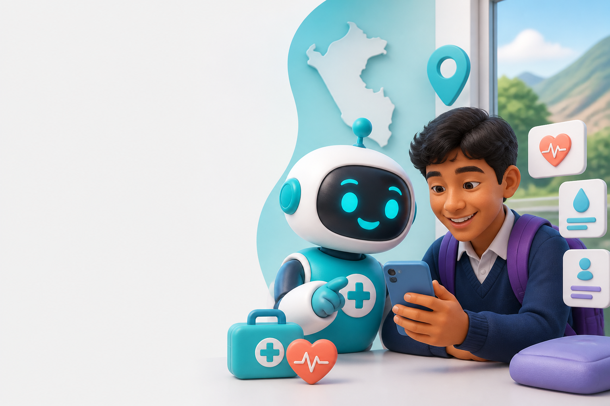

Orientador de síntomas
Conversación guiada que identifica señales de alerta y sugiere el siguiente paso sin emitir diagnósticos.
Orientación preventiva, primeros auxilios, apoyo emocional y servicios de salud en una experiencia clara y amigable.

Funciones diseñadas para una respuesta rápida, accesible y responsable.
Conversación guiada que identifica señales de alerta y sugiere el siguiente paso sin emitir diagnósticos.
Guías visuales para quemaduras, sangrado, atragantamiento, desmayo y lesiones leves.
Respiración guiada, pausa consciente y acceso rápido a orientación profesional.
Busca centros de salud, hospitales, farmacias y boticas utilizando la ubicación del dispositivo.
Acceso directo a SAMU, Policía, Bomberos y contactos personales guardados.
Guarda en este dispositivo alergias, contacto de emergencia y datos básicos de forma voluntaria.
Agenda citas, hidratación o medicamentos previamente indicados por un profesional.
Consulta interacciones guardadas, exporta una copia y controla los datos del prototipo.
Medic incluye ejercicios sencillos de respiración y conexión con el entorno para momentos de estrés. Si necesitas apoyo, también te conecta con la Línea 113, opción 5.
Bot Medic al Rescate es un proyecto educativo que combina tecnología, prevención y servicio a la comunidad. Su prototipo busca validar una experiencia accesible con usuarios reales.
Tu opinión se guarda en la base de datos local y ayuda al equipo a validar su propuesta.